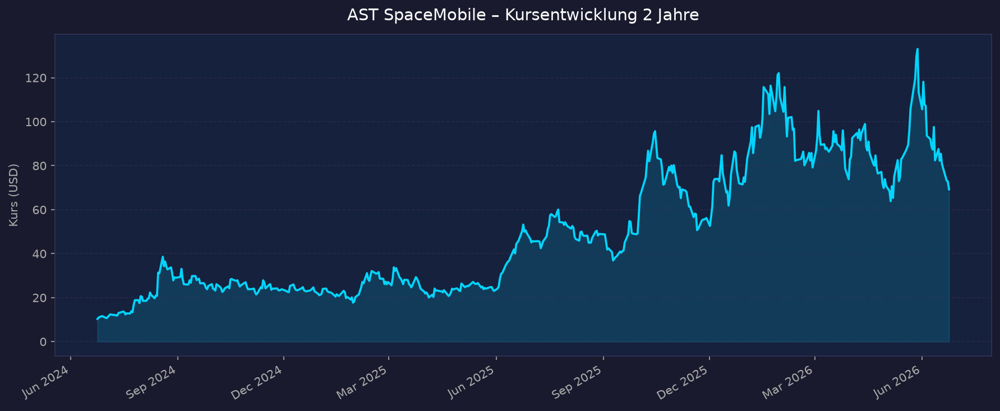
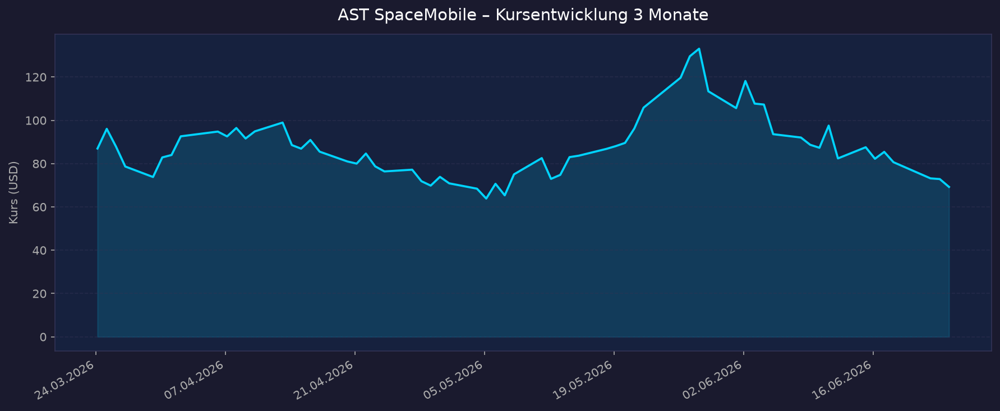

Direkter Pure-Play im Bereich satellitengestützter Direkt-Smartphone-Mobilfunk (Direct-to-Cell / Direct-to-Device). AST SpaceMobile baut mit der „BlueBird"-Konstellation ein weltraumgestütztes Mobilfunknetz auf, das normale Smartphones ohne Spezialhardware direkt mit 4G/5G versorgen soll. Partner sind u. a. AT&T, Verizon und Vodafone sowie rund 60 Mobilfunknetzbetreiber mit über 3 Mrd. Endkunden. Das Unternehmen ist stark defizitär und vorkommerziell: Umsatz im niedrigen zweistelligen Mio.-Bereich pro Quartal, dem ein enormer Kapital- und Cash-Burn für den Konstellationsaufbau gegenübersteht. Bewertung daher nicht über KGV (n/a — defizitär), sondern über P/S, Cash-Burn/Runway, Verwässerung und Konstellationsfortschritt.
📈 1. Kursentwicklung
Aktueller Kurs: ~73,80 USD | Veränderung heute: leicht positiv (Tagesspanne ~73,70–74,20 USD)
Chart – 2 Jahre

Chart – 3 Monate

| Zeitraum | Kurs Start | Kurs Ende | Veränderung |
|---|---|---|---|
| 2 Jahre | ~10,33 USD | ~73,80 USD | +615 % |
| 3 Monate | ~86,98 USD | ~73,80 USD | −15 % |
| 52-Wochen-Hoch | — | ~133,86 USD (Allzeithoch 28.05.2026) | — |
| 52-Wochen-Tief | — | ~41,20 USD | — |
Extrem volatiler Hype-Wert: in 2 Jahren mehr als versechsfacht, im letzten Quartal aber rund 15 % vom Mai-Allzeithoch (133,86 USD) zurückgekommen. Die Korrektur fällt zeitlich mit dem SpaceX-Börsengang am 12.06.2026 (Ticker SPCX, ~1,75 Bio. USD Bewertung) zusammen, der Kapital aus kleineren Weltraum-Pure-Plays abzog — der erfolgreiche BlueBird-8/9/10-Start (17.06.) stabilisierte den Kurs danach wieder.
🔗 Interaktiver Chart: TradingView NASDAQ-ASTS
💹 2. KGV-Entwicklung (Kurs-Gewinn-Verhältnis)
Aktuelles KGV: n/a — defizitär
| Zeitraum | KGV | Einordnung |
|---|---|---|
| Aktuell | n/a — defizitär | Nettoverlust TTM ~ −487 Mio. USD |
| vor 3 Monaten | n/a — defizitär | — |
| vor 6 Monaten | n/a — defizitär | — |
| vor 12 Monaten | n/a — defizitär | — |
| vor 24 Monaten | n/a — defizitär | — |
Bewertung: Klassischer vorkommerzieller Pure-Play — es gibt keinen Gewinn, daher ist das KGV durchgehend nicht aussagekräftig. Bewertungsbasis sind P/S, Cash-Runway und Konstellationsfortschritt (siehe unten). EPS Q1 2026: −0,66 USD.
💰 3. Sales Multiple (Kurs-Umsatz-Verhältnis / P/S)
Aktuelles P/S-Verhältnis: ~330–480x (Marktkap. ~28 Mrd. USD ÷ TTM-Umsatz ~70–85 Mio. USD; je nach Quelle/Berechnungsbasis)
| Zeitraum | P/S Ratio | Einordnung |
|---|---|---|
| Aktuell (Q1/Q2 2026) | ~330–480x | extrem hoch; Umsatzbasis ~70–85 Mio. USD TTM |
| Q1 2026 | ~373x (Macrotrends) | — |
| Q4 2025 | ~376x (Macrotrends) | Umsatz 2025 sprang auf 70,9 Mio. USD |
| vor 12 Monaten (~Mitte 2025) | deutlich höher (>900x möglich) | damals nahezu kein Umsatz; einzelne Quellen nennen >1.900x |
| vor 24 Monaten (~Mitte 2024) | nicht sinnvoll bezifferbar | praktisch vorumsatzlich |
Die P/S-Werte schwanken zwischen Quellen extrem (von ~20x bis >1.900x), weil sich Umsatzbasis (TTM vs. annualisiert), Marktkapitalisierung und Aktienbasis im Hype-Verlauf stark verändert haben. Macrotrends war am Datenstand nicht abrufbar (HTTP 402). Belastbar ist nur die Größenordnung: dreistelliges P/S — eine der höchsten Bewertungen am gesamten US-Markt.
Trend: Mit anlaufendem Umsatz (2025: 70,9 Mio. USD; Guidance 2026: 150–200 Mio. USD) fällt das P/S tendenziell, bleibt aber auf absurd hohem Niveau. Die Bewertung ist reine Zukunftswette auf den Konstellationsaufbau, nicht auf heutige Umsätze.
📊 4. Handelsvolumen (Trading Volume)
| Zeitraum | Ø Tagesvolumen | Auffälligkeiten |
|---|---|---|
| 3-Monats-Durchschnitt | ~21,6 Mio. Aktien | erhöht — Hype- und Korrekturphase |
| 2-Jahres-Durchschnitt | ~13,9 Mio. Aktien | — |
| Volumen-Peaks (2J) | deutlich über Schnitt | rund um Earnings (11.05.2026), FCC-Genehmigung (21.04.2026) und BlueBird-Starts |
Volumentrend: Klar steigendes Interesse — das 3-Monats-Volumen liegt rund 55 % über dem 2-Jahres-Schnitt. Typisch für eine hochliquide Retail- und Momentum-Aktie mit starker News-Taktung (Satellitenstarts, Genehmigungen, Quartalszahlen).
🏦 5. Insider Trades (letzte 2 Jahre)
| Datum | Name | Funktion | Kauf/Verkauf | Anzahl Aktien | Wert (USD) |
|---|---|---|---|---|---|
| Juni 2026 | Abel Avellan | CEO / Gründer (via AA Gables 2, LLC) | Variable Prepaid Forward (Monetarisierung, kein klassischer Verkauf) | bis 2.500.000 | ~146,7 Mio. (Vorauszahlung); Floor 59,58 / Cap 111,72 |
| 2026 | Abel Avellan | CEO | Steuereinbehalt RSU | 32.754 (einbehalten) | @ 113,41 |
| 2026 | President (Name n. n.) | President | Verkauf | nicht spezifiziert | ~3,3 Mio. |
3-Monats-Überblick: Überwiegend Netto-Verkäufe / Monetarisierung durch das Management (CEO-Forward über bis zu 2,5 Mio. Aktien, Präsident verkaufte ~3,3 Mio. USD). Keine nennenswerten offenen Insider-Käufe gefunden. 2-Jahres-Überblick: CEO Abel Avellan hält weiter eine Kontrollmehrheit (~71,6 % Stimmrechte) über Class-C-Aktien (10 Stimmen/Aktie). Die Forward-Verträge sind primär Liquiditätsbeschaffung/Absicherung, nicht zwingend ein Vertrauensentzug — aber kein bullishes Signal.
Quelle: SEC Edgar / StockTitan (Form 4)
🩳 6. Short-Positionen
Aktuelle Short Quote: ~18 % des Streubesitzes (Float)
| Zeitraum | Short Interest | Veränderung |
|---|---|---|
| Aktuell (Q2 2026) | ~18,1 % (~54 Mio. Aktien) | steigend |
| vor ~1 Monat (Ende April 2026) | von 46 → 54 Mio. Aktien | +8 Mio. Aktien in einem Monat |
| Days-to-Cover | ~3,2 Tage | — |
Einschätzung: Hoch (>10 % gilt als hohe Short-Quote). Steigendes Short Interest spiegelt Skepsis gegenüber der extremen Bewertung und dem Cash-Burn wider. Gleichzeitig besteht bei positiven Katalysatoren (Satellitenstarts, neue Verträge) ein Short-Squeeze-Potenzial — die Aktie wird in Foren genau dafür gehandelt (Put/Call-Ratio zeitweise ~0,23, sehr bullish positioniert).
🗞️ 7. Aktuelle Nachrichten
| Datum | Quelle | Nachricht | Relevanz |
|---|---|---|---|
| 23.06.2026 | Businesswire | BlueBirds 11, 12, 13 — Orbital-Start für erste August-Hälfte angekündigt | Hoch |
| 17.06.2026 | Businesswire | Erfolgreicher Start BlueBird 8/9/10 auf SpaceX Falcon 9 (Cape Canaveral); größte je in LEO entfaltete Komm.-Arrays (~2.400 sq ft) | Hoch |
| 12.06.2026 | Markt | SpaceX-Börsengang (SPCX, ~1,75 Bio. USD) befeuert Sektor, löst aber Rücksetzer bei kleineren Pure-Plays aus | Hoch |
| 11.05.2026 | Investing.com | Q1-2026-Zahlen verfehlen Erwartungen (EPS −0,66 vs. −0,21), Guidance bestätigt; Kurs anschließend volatil | Hoch |
| 21.04.2026 | SatNews / FCC | FCC genehmigt 248-Satelliten-Konstellation + erste große SCS-Genehmigung (Supplemental Coverage from Space) für AT&T/Verizon/FirstNet | Hoch |
| Feb 2026 | FinancialContent | ~1,075 Mrd. USD über 10-jährige Wandelanleihe eingesammelt; Kapitalstruktur restrukturiert | Hoch |
| Q1 2026 | StockTitan | Cash-Position ~3,5 Mrd. USD; ~45 BlueBird-Satelliten in Orbit bis Ende 2026 angepeilt | Hoch |
| 2025/26 | Diverse | stc Group: 175 Mio. USD Vorauszahlung über 10-Jahres-Vertrag; ~1,2 Mrd. USD Umsatz-Commitments | Mittel |
| Mai 2026 | Yahoo Finance | Block-1-BlueBird erreichte ~98,9 Mbps Download direkt aufs Smartphone; nächste Generation ~doppelte Geschwindigkeit | Mittel |
| 28.05.2026 | Markt | Allzeithoch bei 133,86 USD, seither Korrektur | Mittel |
Sentiment: Überwiegend positiv bis euphorisch auf operativer Ebene (Starts, FCC-Genehmigung, Partner), aber zunehmend kritisch bei Bewertung, Verwässerung und Cash-Burn. Analysten-Konsens steht auf „Hold" (7–11 Analysten), 12-Monats-Kursziel ~81–88 USD (Spanne 41–115 USD).
📋 8. Letzte 3 Quartalsberichte
Q1 2026 (gemeldet 11.05.2026)
| Kennzahl | Ist | Erwartung | Abweichung |
|---|---|---|---|
| Umsatz (Revenue) | 14,7 Mio. USD | ~37–39 Mio. USD | −61 % (deutlicher Miss) |
| EPS (GAAP) | −0,66 USD | −0,21 USD | −214 % (Verfehlung) |
| Nettoverlust | −191 Mio. USD | — | deutlich ausgeweitet |
| Operativer Verlust | ~−164 Mio. USD | — | — |
| Free Cashflow | ~−327 Mio. USD | — | hoher Burn |
Guidance: Gesamtjahr 2026 150–200 Mio. USD Umsatz bestätigt; Ziel ~45 BlueBird-Satelliten in Orbit; Cash ~3,5 Mrd. USD. Kursreaktion: Gemischt — nachbörslich zunächst +4 %, im Verlauf zeitweise rund −12 %; insgesamt verkraftete der Markt den Miss wegen bestätigter Guidance und Cash-Polster relativ gut.
Q4 2025 (Jahresabschluss)
| Kennzahl | Ist | Erwartung | Abweichung |
|---|---|---|---|
| Umsatz (Revenue) | 54,3 Mio. USD | ~39,4 Mio. USD | +37,7 % (Beat) |
| EPS (GAAP) | −0,26 USD | — | — |
| Nettoverlust | −97,65 Mio. USD | — | ausgeweitet |
| Free Cashflow | negativ (hoher Burn) | — | Detail nicht verfügbar |
Guidance: Ziel ~60 Satelliten bis 2026; Umsatz FY2025 gesamt 70,9 Mio. USD (getrieben durch Gateway-Lieferungen + US-Regierungsmeilensteine). Kursreaktion: Positiv auf den Umsatz-Beat, trotz breiterer Verluste.
Q3 2025
| Kennzahl | Ist | Erwartung | Abweichung |
|---|---|---|---|
| Umsatz (Revenue) | 14,7 Mio. USD | nicht verfügbar | — |
| EPS (GAAP) | nicht verfügbar | nicht verfügbar | — |
| Nettoverlust | negativ | — | — |
| Free Cashflow | negativ | — | Detail nicht verfügbar |
Guidance: Fortschritt beim Konstellationsaufbau; Umsatz getrieben durch US-Regierungs-Meilensteine und Gateway-Lieferungen. Kursreaktion: nicht verfügbar
Umsatz ist lumpy (projekt-/meilensteinabhängig: Gateways, Regierungsverträge), nicht wiederkehrend. Verluste und Cash-Burn weiten sich mit dem Konstellationsaufbau aus. Der eigentliche Werttreiber ist nicht der heutige Umsatz, sondern die Zahl funktionsfähiger Satelliten und der Start des kommerziellen Netzbetriebs.
🌍 9. Marktkontext & Wettbewerb
Markt / Branche: Satellite-to-Cell / Direct-to-Device (D2D) — weltraumgestützter Direkt-Mobilfunk. Marktvolumen ~3,87 Mrd. USD (2025) → ~4,49 Mrd. USD (2026), +16 % p. a.; langfristig deutlich größeres adressierbares Potenzial (Mobilfunk-Konnektivität in Funklöchern für Milliarden Nutzer).
| Wettbewerber | Stärke | Schwäche |
|---|---|---|
| SpaceX / Starlink Direct-to-Cell | Tausende Satelliten in Orbit, eigene Raketen (Startkostenvorteil), T-Mobile + viele internationale Carrier, riesige Bilanz (SpaceX ~15 Mrd. USD Umsatz 2025); seit 12.06.2026 börsennotiert (SPCX) | Aktuell v. a. Text/SMS-fokussiert, niedrigere Bandbreite pro Nutzer im D2D |
| AST SpaceMobile (selbst) | Sehr große phased-array-Satelliten („Cell Tower im All"), echte Breitband-Sprach-/Datenanbindung (~98,9 Mbps gemessen), AT&T + Verizon + Vodafone, FCC-Genehmigung für 248 Sats | Vorkommerziell, extrem kapitalintensiv, wenige Satelliten in Orbit, hoher Cash-Burn, starke Verwässerung |
| Globalstar / Apple | Bestehende Notruf-/SOS-Dienste in iPhones, Apple als Anker | Schmalbandig, kein echtes Breitband-D2D |
| Lynk Global / Skylo u. a. | Frühe D2D-/IoT-Nischen, Partnerschaften | Kleiner, schmalbandiger, weniger Kapital |
Branchentrends:
- Direct-to-Cell wird zum Schlachtfeld zwischen Starlink (Masse kleiner Sats) und AST (wenige große Sats mit mehr Bandbreite). AT&T/Verizon stehen bei AST, T-Mobile bei Starlink.
- Regulatorischer Rückenwind: FCC-Rahmen „Supplemental Coverage from Space" (SCS) öffnet den US-Markt; AST erhielt am 21.04.2026 Genehmigung für 248 Satelliten.
- SpaceX-IPO (12.06.2026) hat den Sektor insgesamt aufgewertet, aber Kapital aus kleineren Pure-Plays abgezogen → Rücksetzer bei ASTS vom Mai-Hoch.
Marktposition: Technologischer Pure-Play-Pionier mit dem klaren Anspruch auf echtes Breitband-D2D (nicht nur SMS) und starken Carrier-Partnern — aber im Wettlauf gegen den finanziell und logistisch überlegenen SpaceX/Starlink-Konzern. Entscheidend sind in den nächsten 12–24 Monaten Starttempo, Netzabdeckung und der Übergang vom Pilot- zum kommerziellen Betrieb.
Risiken aus dem Marktumfeld: Startverzögerungen/Fehlstarts, Wettbewerb durch Starlink mit Eigenraketen und Kostenvorteil, Abhängigkeit von externen Startanbietern (u. a. SpaceX), Kapitalmarktabhängigkeit (laufende Verwässerung), regulatorische/spektrale Hürden in einzelnen Ländern.
🧮 Bewertungs-Score
| Kriterium | Score (1–10) | Begründung |
|---|---|---|
| Bewertung | 2,0 | P/S dreistellig (~330–480x), KGV n/a — eine der teuersten Aktien am Markt. Bewertung allein über Zukunftshoffnung; kaum Sicherheitsmarge. |
| Wachstum & Momentum | 7,5 | Umsatz von ~0 auf 70,9 Mio. USD (2025), Guidance 150–200 Mio. USD (2026); starke News-/Kursdynamik, FCC-Genehmigung, erfolgreiche Starts. Aber Umsatz lumpy und Q1-Miss. |
| Bilanz & Sicherheit | 3,5 | Cash ~3,0–3,5 Mrd. USD klingt komfortabel, aber FCF ~−1,4 Mrd. USD/Jahr → unter ~1–2 Jahre Runway ohne neue Finanzierung. Verwässerung extrem (+33 % bis +66 % Aktien in 12 Monaten), hohe Wandelanleihen-Last. |
| Qualität & Wettbewerbsposition | 6,0 | Echter technologischer Vorsprung im Breitband-D2D, Top-Carrier-Partner, FCC-Genehmigung für 248 Sats. Aber noch vorkommerziell, wenige Sats in Orbit, übermächtiger SpaceX-Wettbewerb. |
| Chancen vs. Risiken | 5,0 | Riesiges Marktpotenzial + Short-Squeeze-Fantasie vs. Cash-Burn, Verwässerung, Ausführungs-/Startrisiko und Starlink-Konkurrenz. Klassisches Binäres-Risiko-Profil. |
Gewichteter Gesamtscore: Bewertung 25 % · Wachstum 20 % · Bilanz 20 % · Qualität 20 % · Chancen/Risiken 15 % = (2,0·0,25)+(7,5·0,20)+(3,5·0,20)+(6,0·0,20)+(5,0·0,15) = 0,50+1,50+0,70+1,20+0,75 = ≈ 4,7 / 10
Spekulativer Hochrisiko-Wert: starke Story und Momentum, aber Bewertung und Bilanzsicherheit ziehen den Score deutlich nach unten.
5-Jahres-Szenario (Horizont 2031)
Heutiger Kurs ~73,80 USD. Keine Dividende (defizitär, Kapital fließt vollständig in den Konstellationsaufbau).
| Szenario | Annahmen | Kurs 2031 | Gesamtrendite ggü. heute |
|---|---|---|---|
| Bär | Startverzögerungen/Fehlstarts, Starlink dominiert D2D, mehrfache Verwässerungsrunden, Refinanzierungsdruck; Markt preist Verfehlung der Skalierung ein | ~20 USD | ≈ −73 % |
| Base | Konstellation kommt in Betrieb, Umsatz wächst in den hohen Hunderter-Mio.- bis ~1-Mrd.-USD-Bereich, weiter defizitär aber Pfad zur Profitabilität sichtbar; moderate weitere Verwässerung | ~95 USD | ≈ +29 % |
| Bull | Vollausbau gelingt zügig, kommerzieller Netzbetrieb mit AT&T/Verizon/Vodafone skaliert, Milliarden-Umsätze, profitabel; AST etabliert sich als globaler D2D-Standard neben Starlink | ~220 USD | ≈ +198 % |
Die Spanne ist bewusst weit — ASTS ist ein binäres Ausführungs-Investment: Gelingt der Konstellationsaufbau ohne Kapital-/Startunfall, ist die Aufwärtsfantasie groß; bei Verzögerungen droht durch Cash-Burn + Verwässerung erheblicher dauerhafter Wertverlust. Kein lineares Kursziel, sondern Wahrscheinlichkeitsverteilung mit dicken Rändern.
📝 Gesamteinschätzung
Stärken:
- Echter technologischer Pure-Play-Vorsprung im Breitband-Direct-to-Cell (gemessene ~98,9 Mbps direkt aufs Standard-Smartphone), nicht nur SMS.
- Erstklassige Partner (AT&T, Verizon, Vodafone, ~60 MNOs / >3 Mrd. Endkunden) und FCC-Genehmigung für 248 Satelliten + SCS-Freigabe.
- Operatives Momentum: erfolgreiche BlueBird-Starts (8/9/10 im Juni, 11/12/13 für August geplant), starke Umsatzdynamik von ~0 auf 70,9 Mio. USD (2025).
- Hohe Cash-Position (~3,0–3,5 Mrd. USD) und ~1,2 Mrd. USD Umsatz-Commitments puffern kurzfristig.
Risiken:
- Extreme Bewertung (P/S ~330–480x, KGV n/a) — praktisch keine Sicherheitsmarge, reine Zukunftswette.
- Hoher Cash-Burn (FCF ~−1,4 Mrd. USD/Jahr) und damit begrenzter Runway → massive Verwässerung (Aktienzahl +33 % bis +66 % in 12 Monaten, hohe Wandelanleihen-Last).
- Übermächtiger Wettbewerb durch SpaceX/Starlink (Eigenraketen, Kostenvorteil, frisches IPO-Kapital seit 12.06.2026).
- Ausführungs-/Startrisiko, Insider monetisieren (CEO-Forward, Präsidenten-Verkauf), hohes Short Interest (~18 %).
Fazit: AST SpaceMobile ist ein hochspekulativer, defizitärer Pure-Play, dessen Kurs nahezu vollständig vom Erfolg des BlueBird-Konstellationsaufbaus und vom Übergang in den kommerziellen Netzbetrieb abhängt. Die Story ist stark (echtes Breitband-D2D, Top-Carrier, FCC-Rückenwind), die Bewertung jedoch extrem und die Finanzlage durch Cash-Burn und Verwässerung fragil. Bewertungs-Score ≈ 4,7/10 — Chancenreich, aber Binäres-Risiko: nur für risikobereite Anleger und in kleiner Positionsgröße sinnvoll abbildbar.
Datenquellen: Yahoo Finance · CNBC · stockanalysis.com · MacroTrends (am Datenstand nicht abrufbar) · companiesmarketcap.com · Businesswire · SatNews · SEC Edgar · StockTitan · Finviz · MarketBeat · Investing.com · The Motley Fool · Medium/Investor's Handbook · TradingView Charts lokal via yfinance/matplotlib erzeugt (Datenstand 2026-06-24).
Rein informative Auswertung öffentlich verfügbarer Daten. Keine Kauf- oder Verkaufsempfehlung.